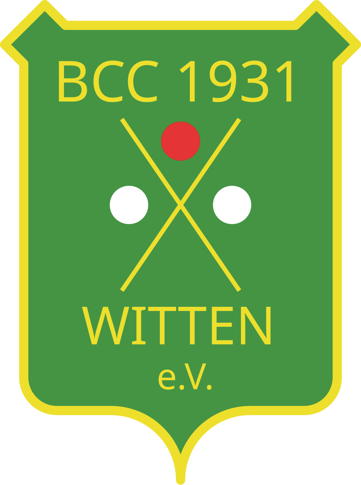

홈 > 브랜드 매거진 > Peek&Cloppenburg
Peek&Cloppenburg
페크운트클로펜부르크(Peek & Cloppenburg)는 독일을 거점으로 하는 의류 백화점 체인이다.
산업 분야 리테일·커머스 · 공개 등급 자료 기반 · 브랜드 평가 4.1 ★
한눈에 보는 브랜드
페크 운트 클로펜부르크는 독일을 대표하는 중상급 패션 백화점 체인이다. 1869년 요한 페크와 안톤 클로펜부르크가 네덜란드 로테르담에서 동업으로 출발했고, 1900~1901년 뒤셀도르프에 독일 1호점을 열며 본격적인 독일 패션 소매 기업으로 자리 잡았다.
첫 번째 전환점은 1911년 클로펜부르크 가문이 함부르크에 별도 회사를 세워 같은 이름의 두 독립 법인 체제로 분화한 것이고, 두 번째 전환점은 2023년 뒤셀도르프 법인의 자율관리형 회생절차다. 현재 그룹 차원에서 유럽 16개국, 160여 개 매장, 약 1만6천 명 규모로 운영된다.
브랜드 관점
이 브랜드를 이해하는 핵심은 두 가지다. 첫째, 단일 매대 진열이 아니라 휴고 보스·아르마니·캘빈 클라인 같은 고급 브랜드와 자체 전속 라벨을 함께 큐레이션하는 패션 전문 백화점 모델이라는 점이다.
둘째, 같은 상호 아래 법적·경제적으로 완전히 분리된 두 법인이 공존하는 독특한 구조다. 뒤셀도르프 법인(P&C West)과 함부르크 법인(P&C North)은 가문 분화에서 비롯된 별개 기업으로, 매입·인사·광고 일부에서만 협력해 왔다.
전략적으로는 렌초 피아노가 설계한 쾰른 벨트슈타트하우스처럼 도심 핵심 입지의 건축 랜드마크를 동원해 프리미엄 인지도를 구축해 왔다. 한국 독자에게는 백화점 한 채를 패션 편집의 무대로 삼는 유럽형 포지셔닝, 그리고 가문 승계 과정에서 동일 브랜드가 둘로 갈라진 사례라는 점이 흥미로운 비교 지점이다.
시작과 성장
19세기 후반 유럽 의류 산업이 기성복 대량 유통으로 재편되던 시기에 출발했다. 창업자 요한 테오도어 페크와 안톤 클로펜부르크는 즈볼레·로테르담의 제조사에서 견습생으로 만나 1869년 로테르담에서 동업을 시작했다.
첫 번째 전환점은 독일 진출이다. 1900년 뒤셀도르프에서 회사를 설립하고 1901년 샤도슈트라세에 첫 판매점을 열었으며, 남성복에 통일 치수 체계를 도입하는 혁신을 선보였다.
두 번째 전환점은 1911년 안톤 클로펜부르크가 함부르크에 별도 동업체를 세운 것으로, 이때부터 가문과 사업이 같은 이름의 두 갈래로 분화했다. 이후 확장 흐름으로는 1988년 첫 국제 플래그십 벨트슈타트하우스 개점, 2001년 함부르크 계열의 반 그라프 출범, 2005년 렌초 피아노 설계 쾰른 매장 개장, 2013년 온라인 자회사 패션 ID 설립 등이 이어졌다.
브랜드 아이덴티티
브랜드 정체성의 중심에는 품질과 격조 있는 쇼핑 경험이 있다. 도심 핵심 입지와 세계적 건축가들이 설계한 매장 건물 자체를 품질의 상징으로 삼아, 공간이 곧 브랜드 메시지가 되도록 했다.
타깃은 패션 감도가 높은 남성·여성·청소년·아동을 폭넓게 아우르며, 디자이너 브랜드와 자체 전속 라벨(크리스티안 베르크, 맥닐, 제이크스, 리뷰 등)을 함께 제안한다. 보이스는 과시적이기보다 정제되고 세련된 톤으로, 고급 브랜드 구색과 건축적 권위를 결합해 '믿고 고르는 패션 백화점'이라는 인상을 전한다.
유럽 중상급 시장에서 접근성과 프리미엄 사이의 균형을 지향한다.
제품과 서비스
취급 품목은 남성·여성·청소년·아동 의류와 패션 잡화 전반으로, 외부 디자이너 브랜드와 자체 전속 라벨을 함께 구성한다. 채널은 도심 및 대형 쇼핑센터의 오프라인 매장이 중심이며, 자회사 패션 ID가 독일·오스트리아·폴란드·네덜란드 온라인 스토어를 운영한다.
계열사 앤슨스(남성복)와 함부르크 계열 반 그라프도 그룹 패션 사업의 한 축을 이룬다.
현재 상태
본사는 독일 뒤셀도르프이며, 같은 이름의 함부르크 법인과 법적·경제적으로 분리된 별개 기업이다. 지배구조는 클로펜부르크 가문이 4대째 다수 지분을 보유하고 경영하는 가족기업 형태다.
사업 지역은 독일을 핵심으로 유럽 다수 국가에 걸쳐 있다. 현재 상태와 관련해 뒤셀도르프 법인은 2023년 3월 보호막형 회생절차(Schutzschirmverfahren)를 신청해 6월부터 자율관리(Eigenverwaltung)로 전환했고, 8월 채권자 집회가 회생계획을 승인하면서 10월 초 절차를 종결했다.
이 과정에서 뒤셀도르프 본사 인력 일부가 감축됐으나 매장 폐점은 피했다. 정확한 최신 재무 수치는 미공개.
타임라인
정리된 연도형 이벤트가 없습니다.
BI/CI 변천사
함께 읽을 브랜드
 리테일·커머스 · 디렉토리무신사
리테일·커머스 · 디렉토리무신사무신사는 한국 패션 플랫폼 브랜드입니다. 온라인 패션 커머스, 브랜드 입점, 자체 콘텐츠, 오프라인 스토어를 통해 국내 디자이너 브랜드와 젊은 소비자를 연결합니다.
 리테일·커머스 · 매거진 완성유니클로
리테일·커머스 · 매거진 완성유니클로유니클로는 패션을 유행의 장식이 아니라 생활을 구성하는 공산품처럼 다룬다. 브랜드의 힘은 화려한 스타일보다 베이직, 품질, 가격, 운영 시스템을 일관되게 정렬하는 데...
 리테일·커머스 · 자료 기반롯데백화점
리테일·커머스 · 자료 기반롯데백화점롯데백화점은 롯데쇼핑이 운영하는 대한민국의 대표 백화점 브랜드다. 1979년 서울 소공동 본점을 열었으며 국내 백화점 업계 1위로 최다 점포망을 갖췄다.
 리테일·커머스 · 자료 기반Van Leest
리테일·커머스 · 자료 기반Van LeestVan Leest는 네덜란드의 리테일·커머스 브랜드로, 상품 큐레이션, 가격 체계, 매장·온라인 유통, 구매 편의성이 브랜드 인식을 좌우하는 영역입니다.
HD
현대백화점
리테일·커머스 · 자료 기반현대백화점현대백화점(Hyundai Department Store)은 현대백화점그룹의 백화점 기업으로, 롯데·신세계와 함께 한국 3대 백화점으로 꼽힌다.
 리테일·커머스 · 자료 기반달러 제너럴
리테일·커머스 · 자료 기반달러 제너럴달러제너럴(Dollar General)은 생활필수품과 잡화를 초저가에 판매하는 미국의 달러 스토어 체인이다.
리테일·커머스 · 자료 기반마이크로소프트 스토어마이크로소프트 스토어(Microsoft Store)는 마이크로소프트가 운영한 리테일 매장 체인이다.

리테일·커머스 · 자료 기반BCCBCC는 1945년 네덜란드에서 시작한 소비자 가전 소매 체인이었다. 70여 년간 네덜란드 대형 가전 체인으로 운영됐으나 2023년 파산했다.